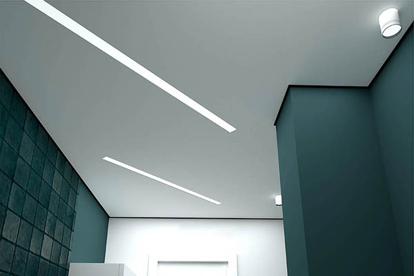

Почему именно мы?
Конкурентные цены
Професиональный подход к каждому
клиенту
Огромный опыт работ
Качество привыше всего
Клиент всегда прав
Основные виды потолков
-
БЕЗЩЕЛЕВЫЕ ПОТОЛКИ - система позволяет не использовать потолочную вставку. Достигается минимальное расстояние от потолка к стене.
-
ТЕНЕВОЙ ПОТОЛОК это современный тип крепления с зазором в 6 миллиметров от полотна до стены.

-
ПАРЯЩИЙ ПОТОЛОК – это разновидность натяжных конструкций. В такой конструкции с натяжным полотном используют специальный профиль, который после установки оставляет не больше расстоянии до стены.
У вас есть возможность получить консультацию и заказать бесплатный замер потолков прямо сейчас!
ЗАКАЗАТЬ
Основные виды освещения
-
ТРЕКОВЫЕ или шинные системы освещения — это системы, в которых светильники крепятся и передвигаются на шинопроводе для создания их индивидуального позиционирования, акцентного освещения.
-
СВЕТОВЫЕ ЛИНИИ – это элементы освещения устанавливаемые на одном уровне с потолком.
-
САФИТЫ – это световые точки которые можно установить в нужном месте на потолке.